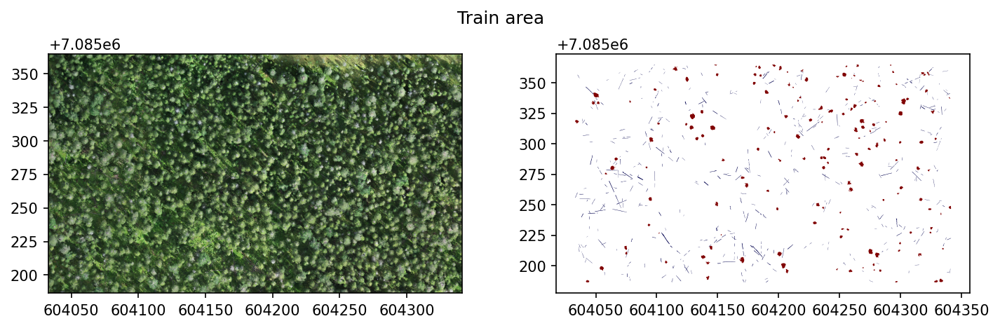
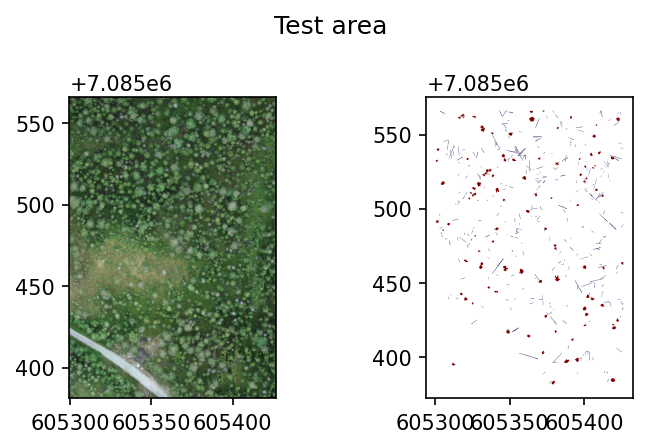

import rasterio as rio
import geopandas as gpd
from pathlib import Path
import rasterio.plot as rioplot
import matplotlib.pyplot as pltYOLOv8 workflow
Example workflow for creating a YOLO-format dataset and training an object detection model with
ultralytics
path_to_data = Path('workflow_examples/')
train_raster = path_to_data/'104_28_Hiidenportti_Chunk1_orto.tif'
train_shp = path_to_data/'104_28_Hiidenportti_Chunk1_orto.geojson'
test_raster = path_to_data/'104_42_Hiidenportti_Chunk5_orto.tif'
test_shp = path_to_data/'104_42_Hiidenportti_Chunk5_orto.geojson'Example data is RGB UAV imagery from Hiidenportti, and the task is to detect and segment different deadwood types. The reference data are annotated as polygons, and target column is layer.
Training area looks like this.
fig, axs = plt.subplots(1,2, dpi=150, figsize=(10,3))
with rio.open(train_raster) as src:
rioplot.show(src, ax=axs[0])
train_gdf = gpd.read_file(train_shp)
train_gdf.plot(column='layer', ax=axs[1], cmap='seismic')
plt.suptitle('Train area')
plt.tight_layout()
plt.show()
And test area looks like this.
fig, axs = plt.subplots(1,2, dpi=150, figsize=(5,3))
with rio.open(test_raster) as src:
rioplot.show(src, ax=axs[0])
test_gdf = gpd.read_file(test_shp)
test_gdf.plot(column='layer', ax=axs[1], cmap='seismic')
plt.suptitle('Test area')
plt.tight_layout()
plt.show()
Install required dependencies
ultralytics requires at least Python 3.8 and PyTorch 1.7. First install PyTorch according to instructions found here, then install ultralytics with pip install ultralytics.
Create YOLO-format dataset
In this example, the data are split into 320x320 pixel tiles with no overlap. Also set the min_bbox_area to 8 pixels so too small objects are discarded.
CLI
geo2ml_create_yolo_dataset \
example_data/workflow_examples/104_28_Hiidenportti_Chunk1_orto.tif \
example_data/workflow_examples/104_28_Hiidenportti_Chunk1_orto.geojson layer \
example_data/workflow_examples/yolo/train --gridsize_x 320 --gridsize_y 320 \
--ann_format polygon --min_bbox_area 8
geo2ml_create_yolo_dataset \
example_data/workflow_examples/104_42_Hiidenportti_Chunk5_orto.tif \
example_data/workflow_examples/104_42_Hiidenportti_Chunk5_orto.geojson layer \
example_data/workflow_examples/yolo/test --gridsize_x 320 --gridsize_y 320 \
--ann_format polygon --min_bbox_area 8Python
from geo2ml.scripts.data import create_yolo_datasetoutpath = path_to_data/'yolo'
create_yolo_dataset(raster_path=train_raster, polygon_path=train_shp, target_column='layer',
outpath=outpath/'train', save_grid=False, gridsize_x=320, gridsize_y=320,
ann_format='polygon', min_bbox_area=8, allow_partial_data=True)
create_yolo_dataset(raster_path=test_raster, polygon_path=test_shp, target_column='layer',
outpath=outpath/'test', save_grid=False, gridsize_x=320, gridsize_y=320,
ann_format='polygon', min_bbox_area=8, allow_partial_data=True)Dataset structure
Above creates the dataset to path_to_data/'yolo', so that it contains folders train and test. Both of these folders contain
- folder
images, which contains the tiled raster patches - folder
vectors, which contain geojson-files corresponding to each file inimages, if the location contains any annotations - folder
labels, which contain the annotations in YOLO format - file
yolo.yaml, which can be used as a template for the dataset description file
Create yolo.yaml for the dataset
Create a yolo.yaml file using the below template. Autogeneration for this might be added later.
# Train/val/test sets as 1) dir: path/to/imgs, 2) file: path/to/imgs.txt, or 3: list: [path/to_imgs1, path_to_imgs2, ..]
path: workflow_examples/yolo/ # dataset root dir
train: train
val: test
test: test
# Classes
names:
0: groundwood
1: uprightwoodIt is advisable to use absolute path as the path: variable, as ultralytics otherwise assumes that path is relative to the datasets_dir in your settings.
Train the model
from ultralytics import YOLOAs an example, train yolov8n-seg.pt for 30 epochs with 640x640px images and batch size of 4 (due to GPU constraints).
model = YOLO('yolov8n-seg.pt')
results = model.train(data=path_to_data/'yolo/yolo.yaml', epochs=30, imgsz=640, batch=4,
optimizer='auto', project=path_to_data/'yolo/runs')Ultralytics YOLOv8.0.180 🚀 Python-3.11.5 torch-2.0.1 CUDA:0 (NVIDIA RTX A2000 8GB Laptop GPU, 8192MiB)
engine/trainer: task=segment, mode=train, model=yolov8n-seg.pt, data=workflow_examples/yolo/yolo.yaml, epochs=30, patience=50, batch=4, imgsz=640, save=True, save_period=-1, cache=False, device=None, workers=8, project=workflow_examples/yolo/runs, name=None, exist_ok=False, pretrained=True, optimizer=auto, verbose=True, seed=0, deterministic=True, single_cls=False, rect=False, cos_lr=False, close_mosaic=10, resume=False, amp=True, fraction=1.0, profile=False, freeze=None, overlap_mask=True, mask_ratio=4, dropout=0.0, val=True, split=val, save_json=False, save_hybrid=False, conf=None, iou=0.7, max_det=300, half=False, dnn=False, plots=True, source=None, show=False, save_txt=False, save_conf=False, save_crop=False, show_labels=True, show_conf=True, vid_stride=1, stream_buffer=False, line_width=None, visualize=False, augment=False, agnostic_nms=False, classes=None, retina_masks=False, boxes=True, format=torchscript, keras=False, optimize=False, int8=False, dynamic=False, simplify=False, opset=None, workspace=4, nms=False, lr0=0.01, lrf=0.01, momentum=0.937, weight_decay=0.0005, warmup_epochs=3.0, warmup_momentum=0.8, warmup_bias_lr=0.1, box=7.5, cls=0.5, dfl=1.5, pose=12.0, kobj=1.0, label_smoothing=0.0, nbs=64, hsv_h=0.015, hsv_s=0.7, hsv_v=0.4, degrees=0.0, translate=0.1, scale=0.5, shear=0.0, perspective=0.0, flipud=0.0, fliplr=0.5, mosaic=1.0, mixup=0.0, copy_paste=0.0, cfg=None, tracker=botsort.yaml, save_dir=workflow_examples/yolo/runs/train2
Overriding model.yaml nc=80 with nc=2
from n params module arguments
0 -1 1 464 ultralytics.nn.modules.conv.Conv [3, 16, 3, 2]
1 -1 1 4672 ultralytics.nn.modules.conv.Conv [16, 32, 3, 2]
2 -1 1 7360 ultralytics.nn.modules.block.C2f [32, 32, 1, True]
3 -1 1 18560 ultralytics.nn.modules.conv.Conv [32, 64, 3, 2]
4 -1 2 49664 ultralytics.nn.modules.block.C2f [64, 64, 2, True]
5 -1 1 73984 ultralytics.nn.modules.conv.Conv [64, 128, 3, 2]
6 -1 2 197632 ultralytics.nn.modules.block.C2f [128, 128, 2, True]
7 -1 1 295424 ultralytics.nn.modules.conv.Conv [128, 256, 3, 2]
8 -1 1 460288 ultralytics.nn.modules.block.C2f [256, 256, 1, True]
9 -1 1 164608 ultralytics.nn.modules.block.SPPF [256, 256, 5]
10 -1 1 0 torch.nn.modules.upsampling.Upsample [None, 2, 'nearest']
11 [-1, 6] 1 0 ultralytics.nn.modules.conv.Concat [1]
12 -1 1 148224 ultralytics.nn.modules.block.C2f [384, 128, 1]
13 -1 1 0 torch.nn.modules.upsampling.Upsample [None, 2, 'nearest']
14 [-1, 4] 1 0 ultralytics.nn.modules.conv.Concat [1]
15 -1 1 37248 ultralytics.nn.modules.block.C2f [192, 64, 1]
16 -1 1 36992 ultralytics.nn.modules.conv.Conv [64, 64, 3, 2]
17 [-1, 12] 1 0 ultralytics.nn.modules.conv.Concat [1]
18 -1 1 123648 ultralytics.nn.modules.block.C2f [192, 128, 1]
19 -1 1 147712 ultralytics.nn.modules.conv.Conv [128, 128, 3, 2]
20 [-1, 9] 1 0 ultralytics.nn.modules.conv.Concat [1]
21 -1 1 493056 ultralytics.nn.modules.block.C2f [384, 256, 1]
22 [15, 18, 21] 1 1004470 ultralytics.nn.modules.head.Segment [2, 32, 64, [64, 128, 256]]
YOLOv8n-seg summary: 261 layers, 3264006 parameters, 3263990 gradients
Transferred 381/417 items from pretrained weights
TensorBoard: Start with 'tensorboard --logdir workflow_examples/yolo/runs/train2', view at http://localhost:6006/
Freezing layer 'model.22.dfl.conv.weight'
AMP: running Automatic Mixed Precision (AMP) checks with YOLOv8n...
Downloading https://github.com/ultralytics/assets/releases/download/v0.0.0/yolov8n.pt to 'yolov8n.pt'...
100%|██████████████████████████████████████████████████████████████| 6.23M/6.23M [00:04<00:00, 1.59MB/s]
AMP: checks passed ✅
train: Scanning /mnt/d/Users/E1005164/geo2ml/nbs/workflow_examples/yolo/train/labels... 296 images, 79 b
train: New cache created: /mnt/d/Users/E1005164/geo2ml/nbs/workflow_examples/yolo/train/labels.cache
val: Scanning /mnt/d/Users/E1005164/geo2ml/nbs/workflow_examples/yolo/test/labels... 118 images, 22 back
val: New cache created: /mnt/d/Users/E1005164/geo2ml/nbs/workflow_examples/yolo/test/labels.cache
Plotting labels to workflow_examples/yolo/runs/train2/labels.jpg...
optimizer: 'optimizer=auto' found, ignoring 'lr0=0.01' and 'momentum=0.937' and determining best 'optimizer', 'lr0' and 'momentum' automatically...
optimizer: AdamW(lr=0.001667, momentum=0.9) with parameter groups 66 weight(decay=0.0), 77 weight(decay=0.0005), 76 bias(decay=0.0)
Image sizes 640 train, 640 val
Using 4 dataloader workers
Logging results to workflow_examples/yolo/runs/train2
Starting training for 30 epochs...
Epoch GPU_mem box_loss seg_loss cls_loss dfl_loss Instances Size
1/30 1.02G 1.954 2.929 3.966 1.645 10 640: 100%|█████████
Class Images Instances Box(P R mAP50 mAP50-95) Mask(P
all 140 575 0.708 0.0661 0.132 0.0589 0.68 0.0572 0.117 0.0378
Epoch GPU_mem box_loss seg_loss cls_loss dfl_loss Instances Size
2/30 1.01G 1.857 2.211 3.052 1.532 12 640: 100%|█████████
Class Images Instances Box(P R mAP50 mAP50-95) Mask(P
all 140 575 0.491 0.335 0.374 0.178 0.483 0.321 0.347 0.151
Epoch GPU_mem box_loss seg_loss cls_loss dfl_loss Instances Size
3/30 0.96G 1.853 2.11 2.738 1.529 13 640: 100%|█████████
Class Images Instances Box(P R mAP50 mAP50-95) Mask(P
all 140 575 0.384 0.358 0.32 0.18 0.419 0.323 0.306 0.144
Epoch GPU_mem box_loss seg_loss cls_loss dfl_loss Instances Size
4/30 0.963G 1.843 2.023 2.641 1.52 5 640: 100%|█████████
Class Images Instances Box(P R mAP50 mAP50-95) Mask(P
all 140 575 0.539 0.368 0.389 0.201 0.531 0.365 0.371 0.178
Epoch GPU_mem box_loss seg_loss cls_loss dfl_loss Instances Size
5/30 0.963G 1.768 2.081 2.491 1.503 19 640: 100%|█████████
Class Images Instances Box(P R mAP50 mAP50-95) Mask(P
all 140 575 0.424 0.461 0.417 0.229 0.44 0.437 0.404 0.195
Epoch GPU_mem box_loss seg_loss cls_loss dfl_loss Instances Size
6/30 0.963G 1.782 2.009 2.36 1.543 9 640: 100%|█████████
Class Images Instances Box(P R mAP50 mAP50-95) Mask(P
all 140 575 0.446 0.463 0.443 0.24 0.453 0.465 0.438 0.191
Epoch GPU_mem box_loss seg_loss cls_loss dfl_loss Instances Size
7/30 0.958G 1.814 1.953 2.39 1.505 7 640: 100%|█████████
Class Images Instances Box(P R mAP50 mAP50-95) Mask(P
all 140 575 0.583 0.467 0.475 0.254 0.571 0.463 0.46 0.212
Epoch GPU_mem box_loss seg_loss cls_loss dfl_loss Instances Size
8/30 0.963G 1.719 1.826 2.307 1.479 20 640: 100%|█████████
Class Images Instances Box(P R mAP50 mAP50-95) Mask(P
all 140 575 0.571 0.416 0.439 0.231 0.542 0.417 0.427 0.209
Epoch GPU_mem box_loss seg_loss cls_loss dfl_loss Instances Size
9/30 0.963G 1.711 1.799 2.372 1.478 3 640: 100%|█████████
Class Images Instances Box(P R mAP50 mAP50-95) Mask(P
all 140 575 0.494 0.43 0.437 0.251 0.473 0.409 0.401 0.197
Epoch GPU_mem box_loss seg_loss cls_loss dfl_loss Instances Size
10/30 0.963G 1.666 1.89 1.923 1.421 10 640: 100%|█████████
Class Images Instances Box(P R mAP50 mAP50-95) Mask(P
all 140 575 0.486 0.506 0.469 0.264 0.533 0.485 0.467 0.227
Epoch GPU_mem box_loss seg_loss cls_loss dfl_loss Instances Size
11/30 0.963G 1.729 1.813 2.12 1.482 5 640: 100%|█████████
Class Images Instances Box(P R mAP50 mAP50-95) Mask(P
all 140 575 0.486 0.495 0.481 0.263 0.477 0.481 0.462 0.224
Epoch GPU_mem box_loss seg_loss cls_loss dfl_loss Instances Size
12/30 0.96G 1.76 1.738 2.119 1.484 6 640: 100%|█████████
Class Images Instances Box(P R mAP50 mAP50-95) Mask(P
all 140 575 0.6 0.535 0.557 0.309 0.592 0.522 0.538 0.266
Epoch GPU_mem box_loss seg_loss cls_loss dfl_loss Instances Size
13/30 0.971G 1.665 1.688 2.004 1.43 15 640: 100%|█████████
Class Images Instances Box(P R mAP50 mAP50-95) Mask(P
all 140 575 0.608 0.537 0.538 0.302 0.603 0.53 0.516 0.254
Epoch GPU_mem box_loss seg_loss cls_loss dfl_loss Instances Size
14/30 0.958G 1.654 1.766 1.967 1.398 6 640: 100%|█████████
Class Images Instances Box(P R mAP50 mAP50-95) Mask(P
all 140 575 0.644 0.53 0.583 0.33 0.646 0.532 0.581 0.282
Epoch GPU_mem box_loss seg_loss cls_loss dfl_loss Instances Size
15/30 0.958G 1.606 1.675 1.869 1.414 8 640: 100%|█████████
Class Images Instances Box(P R mAP50 mAP50-95) Mask(P
all 140 575 0.527 0.504 0.517 0.271 0.549 0.452 0.472 0.212
Epoch GPU_mem box_loss seg_loss cls_loss dfl_loss Instances Size
16/30 0.958G 1.541 1.722 1.738 1.385 10 640: 100%|█████████
Class Images Instances Box(P R mAP50 mAP50-95) Mask(P
all 140 575 0.532 0.544 0.533 0.308 0.526 0.542 0.503 0.244
Epoch GPU_mem box_loss seg_loss cls_loss dfl_loss Instances Size
17/30 0.96G 1.539 1.672 1.794 1.372 10 640: 100%|█████████
Class Images Instances Box(P R mAP50 mAP50-95) Mask(P
all 140 575 0.587 0.478 0.521 0.29 0.608 0.472 0.52 0.251
Epoch GPU_mem box_loss seg_loss cls_loss dfl_loss Instances Size
18/30 0.956G 1.516 1.637 1.752 1.349 9 640: 100%|█████████
Class Images Instances Box(P R mAP50 mAP50-95) Mask(P
all 140 575 0.464 0.516 0.459 0.271 0.451 0.501 0.445 0.228
Epoch GPU_mem box_loss seg_loss cls_loss dfl_loss Instances Size
19/30 0.958G 1.516 1.776 1.713 1.333 8 640: 100%|█████████
Class Images Instances Box(P R mAP50 mAP50-95) Mask(P
all 140 575 0.61 0.57 0.579 0.346 0.616 0.534 0.552 0.282
Epoch GPU_mem box_loss seg_loss cls_loss dfl_loss Instances Size
20/30 0.956G 1.502 1.645 1.67 1.339 2 640: 100%|█████████
Class Images Instances Box(P R mAP50 mAP50-95) Mask(P
all 140 575 0.54 0.468 0.505 0.304 0.548 0.464 0.493 0.242
Closing dataloader mosaic
Epoch GPU_mem box_loss seg_loss cls_loss dfl_loss Instances Size
21/30 0.958G 1.421 1.339 1.935 1.34 5 640: 100%|█████████
Class Images Instances Box(P R mAP50 mAP50-95) Mask(P
all 140 575 0.602 0.554 0.566 0.33 0.602 0.531 0.543 0.27
Epoch GPU_mem box_loss seg_loss cls_loss dfl_loss Instances Size
22/30 0.956G 1.466 1.358 1.722 1.363 5 640: 100%|█████████
Class Images Instances Box(P R mAP50 mAP50-95) Mask(P
all 140 575 0.644 0.617 0.636 0.377 0.639 0.604 0.616 0.31
Epoch GPU_mem box_loss seg_loss cls_loss dfl_loss Instances Size
23/30 0.958G 1.41 1.325 1.667 1.329 6 640: 100%|█████████
Class Images Instances Box(P R mAP50 mAP50-95) Mask(P
all 140 575 0.641 0.583 0.596 0.356 0.639 0.575 0.58 0.288
Epoch GPU_mem box_loss seg_loss cls_loss dfl_loss Instances Size
24/30 0.958G 1.373 1.287 1.697 1.285 10 640: 100%|█████████
Class Images Instances Box(P R mAP50 mAP50-95) Mask(P
all 140 575 0.665 0.534 0.6 0.355 0.663 0.53 0.581 0.289
Epoch GPU_mem box_loss seg_loss cls_loss dfl_loss Instances Size
25/30 0.956G 1.437 1.277 1.644 1.309 8 640: 100%|█████████
Class Images Instances Box(P R mAP50 mAP50-95) Mask(P
all 140 575 0.628 0.56 0.571 0.344 0.607 0.532 0.552 0.274
Epoch GPU_mem box_loss seg_loss cls_loss dfl_loss Instances Size
26/30 0.956G 1.387 1.257 1.554 1.293 1 640: 100%|█████████
Class Images Instances Box(P R mAP50 mAP50-95) Mask(P
all 140 575 0.564 0.578 0.581 0.356 0.549 0.562 0.56 0.288
Epoch GPU_mem box_loss seg_loss cls_loss dfl_loss Instances Size
27/30 0.956G 1.339 1.293 1.522 1.303 5 640: 100%|█████████
Class Images Instances Box(P R mAP50 mAP50-95) Mask(P
all 140 575 0.571 0.576 0.583 0.358 0.562 0.563 0.561 0.285
Epoch GPU_mem box_loss seg_loss cls_loss dfl_loss Instances Size
28/30 0.956G 1.32 1.255 1.451 1.252 2 640: 100%|█████████
Class Images Instances Box(P R mAP50 mAP50-95) Mask(P
all 140 575 0.65 0.541 0.6 0.368 0.635 0.544 0.585 0.293
Epoch GPU_mem box_loss seg_loss cls_loss dfl_loss Instances Size
29/30 0.954G 1.338 1.191 1.559 1.277 4 640: 100%|█████████
Class Images Instances Box(P R mAP50 mAP50-95) Mask(P
all 140 575 0.639 0.561 0.612 0.364 0.613 0.562 0.594 0.298
Epoch GPU_mem box_loss seg_loss cls_loss dfl_loss Instances Size
30/30 0.956G 1.298 1.234 1.599 1.246 5 640: 100%|█████████
Class Images Instances Box(P R mAP50 mAP50-95) Mask(P
all 140 575 0.661 0.557 0.59 0.358 0.652 0.55 0.57 0.29
30 epochs completed in 0.349 hours.
Optimizer stripped from workflow_examples/yolo/runs/train2/weights/last.pt, 6.8MB
Optimizer stripped from workflow_examples/yolo/runs/train2/weights/best.pt, 6.8MB
Validating workflow_examples/yolo/runs/train2/weights/best.pt...
Ultralytics YOLOv8.0.180 🚀 Python-3.11.5 torch-2.0.1 CUDA:0 (NVIDIA RTX A2000 8GB Laptop GPU, 8192MiB)
YOLOv8n-seg summary (fused): 195 layers, 3258454 parameters, 0 gradients
Class Images Instances Box(P R mAP50 mAP50-95) Mask(P
all 140 575 0.644 0.617 0.636 0.378 0.636 0.609 0.617 0.31
groundwood 140 446 0.571 0.529 0.532 0.291 0.564 0.522 0.496 0.203
uprightwood 140 129 0.716 0.705 0.74 0.464 0.708 0.696 0.738 0.418
Speed: 1.3ms preprocess, 23.2ms inference, 0.0ms loss, 1.7ms postprocess per image
Results saved to workflow_examples/yolo/runs/train2